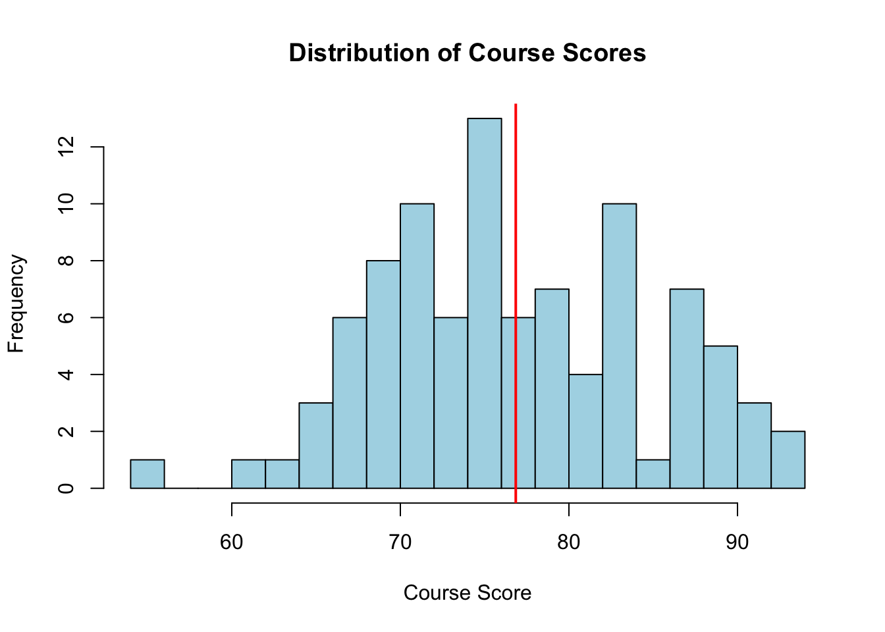

Throughout this unit we will use one running example to introduce the basic building blocks of R: vectors, strings, special values, matrices, data frames, lists, functions, file I/O, and graphics.
The mission: a class of 100 students has taken graded work in three categories: five quizzes, two tests, and one final exam, each scored out of 100 points. A student’s course score is a weighted average of the category means – quizzes count 30%, tests count 30%, and the final counts 40%. To make the simulated data realistic, a student’s test and final scores are generated from their quiz performance by a simple linear regression, with a different intercept for Program A and Program B students, and a few quizzes are missing entirely (a student who did not sit that quiz). We want to
work out the calculation step by step for one student,
package that calculation into a reusable function,
apply the function to every student to get a full set of results, and
present those results as a table and as plots.
This mirrors how real data-analysis code is usually built: explore on one case, generalize into a function, then apply and report.
1.2 Generating an artificial score dataset
1.2.1 Vectors: recording quiz scores
Each quiz, across all students, is naturally stored as a vector. We simulate a class of 100 students, five quizzes scored out of 100, using rnorm and clipping the result to a valid 0-100 range with pmin/pmax:
We could type out "Quiz1", "Quiz2", … by hand, but paste0 builds such labels programmatically – a habit that pays off the moment there are 40 quizzes instead of 5:
With 100 students, typing out individual names is not realistic either. sprintf generates zero-padded IDs like "S001", "S002", … in one line – exactly the kind of job it is built for:
students <-sprintf("S%03d", 1:n)head(students)
[1] "S001" "S002" "S003" "S004" "S005" "S006"
1.2.3 Simulating the tests and the final using vectorized math
In a real class, a student’s test and final scores are not independent of how they did on the quizzes. We simulate that by treating each student’s mean quiz score as a predictor in a simple linear regression.
This is a great place to demonstrate vectorized calculations in R. Instead of writing a for loop to calculate each student’s score one by one, we can simply add and multiply whole vectors of length 100 together. R aligns the elements automatically:
program <-factor(sample(c("Program A", "Program B"), n, replace =TRUE))quiz.mat <-cbind(Quiz1, Quiz2, Quiz3, Quiz4, Quiz5)head(quiz.mat)
1.2.4 Matrices: combining all the scores (Complete Data)
Before we simulate absences (missing values), let’s bind the quiz, test, and final columns together into one complete matrix. It will have one row per student and one column per graded item.
scores <-cbind(quiz.mat, Test1, Test2, Final)colnames(scores) <-c(quiz.names, test.names, "Final")rownames(scores) <- students# Here is our complete dataset before any missing valueshead(scores)
In reality, students occasionally miss a quiz. Let’s randomly drop about 5% of the quiz scores by assigning them the special value NA (Not Available).
miss.rate <-0.05sample(n, round(n*miss.rate))
[1] 31 35 73 49 38
# We only want to introduce NAs into the first 5 columns (the quizzes)for(j in1:ncol(scores)) { scores[sample(n, round(n*miss.rate)), j] <-NA}head(scores, 10)
We will rely on na.rm = TRUE later so that a missing quiz simply drops out of a student’s quiz average, rather than returning NA for their whole course score.
1.2.6 Data frames: adding names and program
A data frame lets us combine columns of different types – here, the students’ names and program alongside their (numeric) scores – into a single table:
roster <-data.frame(name = students, program = program, scores, check.names =FALSE)roster
1.3 Calculating a Single Student’s Score
Before writing a function, it often helps to work through the logic step by step on a single example. Let’s find a student who missed a quiz so we can see how missing values are handled, and extract their record:
# Find the index of the first student who has at least one NA in columns 1 to 5example.ix <-which(rowSums(is.na(scores[, 1:5])) >0)[1]student_record <- roster[example.ix, ]student_record
To avoid hardcoding column positions, we can extract the column names from this record and use grep to dynamically search for columns starting with “Quiz”, “Test”, or “Final”:
# Extract all the column names from the student recordcol_names <-names(student_record)col_names
# Check which columns grep found for the quizzesquiz.cols
[1] 3 4 5 6 7
Next, we extract the scores using those indices, convert them to numeric values, and calculate the mean for each category. Using na.rm = TRUE ensures that the missing quiz is simply ignored rather than turning the whole average into NA:
# Calculate the mean for each category, ignoring NAsquiz.mean <-mean(as.numeric(student_record[quiz.cols]), na.rm =TRUE)test.mean <-mean(as.numeric(student_record[test.cols]), na.rm =TRUE)final.score <-as.numeric(student_record[final.col])c(Quiz = quiz.mean, Test = test.mean, Final = final.score)
Quiz Test Final
68.0 64.5 83.0
Finally, we apply the syllabus weights to calculate the overall course score:
Now that we know the logic works perfectly for one student, we can package those exact steps into a reusable function. This function will take any student_record as its input and return a named vector containing the category means and the final score.
To make the grading policy more forgiving, we are adding a conditional rule: if a student’s final exam score is strictly higher than their test average, the final exam score will replace the test average. Because compute.course.score processes exactly one student at a time, we evaluate a single logical condition using a standard if statement rather than a vectorized alternative like ifelse. We also use !is.na() checks to ensure the if statement doesn’t crash by attempting to evaluate a missing value (which could happen if a student had no test or final scores).
compute.course.score <-function(student_record, w_quiz =0.3, w_test =0.3, w_final =0.4) { col_names <-names(student_record) quiz.cols <-grep("^Quiz", col_names) test.cols <-grep("^Test", col_names) final.col <-grep("^Final", col_names) quiz.mean <-mean(as.numeric(student_record[quiz.cols]), na.rm =TRUE) test.mean <-mean(as.numeric(student_record[test.cols]), na.rm =TRUE) final.score <-as.numeric(student_record[final.col])# Explicit conditional check: replace test mean with final score if it is higherif (!is.na(final.score) &&!is.na(test.mean) && final.score > test.mean) { test.mean <- final.score }# The weights are now dynamic variables rather than hardcoded numbers course.score <- (w_quiz * quiz.mean) + (w_test * test.mean) + (w_final * final.score)c(Quiz = quiz.mean, Test = test.mean, Final = final.score, course.score = course.score)}
Let’s test our updated function on two specific scenarios to verify the conditional logic. We will format these inputs as named vectors rather than data frames. This mimics exactly what the apply() function will do later when it passes rows of our dataset to this function.
Student A struggled on the tests (average: 70) but aced the final (95). The function should detect that 95 > 70 and replace their test mean with 95 before calculating the final course score. Student B did great on the tests (average: 90) but dropped on the final (75). The function should keep their original test mean.
# Create the mock record for Student A as a named vectorstudent_A <-c(name ="Student_A", program ="Program A",Quiz1 ="80", Quiz2 ="80", Quiz3 ="80", Quiz4 ="80", Quiz5 ="80", # Quiz mean = 80Test1 ="65", Test2 ="75", # Test mean = 70Final ="95")# Create the mock record for Student B as a named vectorstudent_B <-c(name ="Student_B", program ="Program B",Quiz1 ="80", Quiz2 ="80", Quiz3 ="80", Quiz4 ="80", Quiz5 ="80", # Quiz mean = 80Test1 ="90", Test2 ="90", # Test mean = 90Final ="75")# Test Student A: The Test mean should be updated to 95 in the outputcat("Student A Results:\n")
Student A Results:
compute.course.score(student_A)
Quiz Test Final course.score
80.0 95.0 95.0 90.5
# Math check: (0.3 * 80) + (0.3 * 95) + (0.4 * 95) = 90.5# Test Student B: The Test mean should remain 90 in the outputcat("\nStudent B Results:\n")
Now that we have a function working for one student, we can apply it across the entire class. The apply function is perfect for this: it takes our roster data frame, loops over either rows (1) or columns (2), and executes our custom function.
# apply over margin 1 (rows)all.results <-t(apply(roster, 1, compute.course.score))# Combine the original demographic info with the calculated scoresresults <-cbind(roster[, c("name", "program")], all.results)results
1.4.2 Looping the rows with for
While apply() is idiomatic R and very concise, we can also use a traditional for loop to process each student. To do this efficiently, we first pre-allocate an empty matrix of the correct size to store our output. Then, we iterate through the row indices one by one.
Inside the loop, we use unlist() to convert the single row of our data frame into a named vector. This guarantees we are feeding our compute.course.score function the exact same data structure that apply() uses under the hood.
# 1. Pre-allocate an empty matrix to hold the resultsnum_students <-nrow(roster)loop_results <-matrix(NA, nrow = num_students, ncol =4)# Set the column and row names to match our expected outputcolnames(loop_results) <-c("Quiz", "Test", "Final", "course.score")rownames(loop_results) <- roster$name# 2. Iterate over each row indexfor (i in1:num_students) {# Extract the single row as a named character vector student_record <-unlist(roster[i, ]) # Compute the score and store it in the corresponding row of our matrix loop_results[i, ] <-compute.course.score(student_record)}# Peek at the first few rows of the loop resultshead(loop_results)
Quiz Test Final course.score
S001 73.4 81 81 78.72
S002 73.4 70 70 71.02
S003 72.4 76 76 74.92
S004 72.4 65 NA NA
S005 68.0 83 83 78.50
S006 73.4 74 74 73.82
Now, let’s run the exact same calculation using apply() and use the all.equal() function to verify that both methods yield the exact same mathematical results.
# 3. Check if they are mathematically identical# (We set check.attributes = FALSE to ignore minor metadata differences, # like how apply() inherits row names vs. how we manually assigned them)is_same <-all.equal(loop_results, results, check.attributes =FALSE)print(paste("Do the for loop and apply() give the exact same results?", is_same))
[1] "Do the for loop and apply() give the exact same results? target is matrix, current is data.frame"
1.4.3 Saving and reloading the results
The results table is worth keeping. A data frame can be written as a plain csv file for spreadsheets, or saved as an .RDS file to preserve it exactly (including the program factor) for future R sessions:
1.5 Writing a Function for the Whole Process with List Output
Sometimes a function needs to return multiple distinct pieces of information that don’t fit neatly into a single table. A list in R is a flexible container that can bundle objects of completely different types and sizes together.
Let’s write a wrapper function that takes our raw roster data and our weighting scheme. It will calculate the scores, but instead of just returning the table, it will return a list containing four very different items:
The full processed data frame.
A numeric vector of just the final course scores.
A frequency table of scores binned into 10-point intervals.
A character vector of the names of students who failed (scored below 60).
analyze_class_performance <-function(roster_data, w_quiz =0.3, w_test =0.3, w_final =0.4) {# 1. Pass the weights down into compute.course.score all.results <-t(apply(roster_data, 1, compute.course.score, w_quiz = w_quiz, w_test = w_test, w_final = w_final)) processed_table <-cbind(roster_data[, c("name", "program")], all.results)# 2. Extract final course scores final_scores <- processed_table$course.score# 3. Create bins (handling NAs) bins <-seq(0, 100, by =10) score_bins <-table(cut(final_scores, breaks = bins, include.lowest =TRUE), useNA ="ifany")# 4. Extract names of failing students (safely ignoring NAs using which) failing_students <- processed_table$name[which(final_scores <60)]# 5. Extract names of students with missing overall scores incomplete_students <- processed_table$name[is.na(final_scores)]# Bundle everything into a named listlist(ProcessedTable = processed_table,CourseScores = final_scores,ScoreDistribution = score_bins,Failing_Students = failing_students,incomplete_students = incomplete_students )}
When we run this function, it returns a single list object. We can use the str() function to quickly inspect the structure of our new list and see all the different data types nested inside it:
# Run the analysisclass_report <-analyze_class_performance(roster)# Inspect the structure of the returned liststr(class_report, max.level =1)
List of 5
$ ProcessedTable :'data.frame': 100 obs. of 6 variables:
$ CourseScores : num [1:100] 78.7 71 74.9 NA 78.5 ...
$ ScoreDistribution : 'table' int [1:11(1d)] 0 0 0 0 0 1 19 42 27 5 ...
..- attr(*, "dimnames")=List of 1
$ Failing_Students : chr "S094"
$ incomplete_students: chr [1:6] "S004" "S023" "S030" "S038" ...
To access individual elements inside a list, you use the $ operator (just like with data frames) or double brackets [[ ]]. Let’s look at the score distribution and the failing students:
# Access the 10-point bin distributionclass_report$ScoreDistribution
# Access the names of the failing studentsclass_report$Failing_Students
[1] "S094"
class_report$incomplete_students
[1] "S004" "S023" "S030" "S038" "S081" "S100"
1.6 The use of pipe |>
The pipe operator x |> f(...) is just shorthand for f(x, ...) – it takes whatever is on its left and inserts it as the first argument of the function call on its right. This lets you write a sequence of transformations in the order you think of them, instead of nesting calls inside out:
# Without the pipe: read from the inside outround(sqrt(mean(c(4, 9, 16, 25))), 2)
[1] 3.67
# With the pipe: read top to bottom, left to rightc(4, 9, 16, 25) |>mean() |>sqrt() |>round(2)
[1] 3.67
Each step’s output becomes the next step’s first input, so mean() receives the vector, sqrt() receives the mean, and round(2) receives the square root (with 2 filling the second argument, digits). Extra arguments after the first are passed straight through exactly as they would be in a normal call, which matters once a pipeline mixes several multi-argument functions – much like the quiz-generating recipe used throughout this unit:
set.seed(123)# Same idea as gen.quiz(), written as one pipeline: each step's output# fills the *first* argument of the next call, while the remaining,# named arguments are supplied just as in an ordinary function callrnorm(20, mean =75, sd =10) |>round(digits =0) |># round(x, digits = 0)pmin(100) |># pmin(x, 100)pmax(0) |># pmax(x, 0)sort(decreasing =TRUE) |># sort(x, decreasing = TRUE)head(n =5) # head(x, n = 5)
[1] 93 92 91 87 82
Sometimes the piped value needs to land in an argument other than the first. The placeholder _ marks exactly where it goes, as long as that argument is named:
# seq(1, to = 10, by = 2) -- the piped 10 fills the "to" argument10|>seq(1, to = _, by =2)
[1] 1 3 5 7 9
This same idea – chaining verbs with |> – is what makes the dplyr pipelines below read like a recipe.
1.7 Data Manipulation with dplyr
Base R’s indexing, apply(), and for loops can do everything we’ve done so far, but dplyr offers a grammar of a handful of verbs – mutate(), filter(), select(), arrange(), group_by(), summarize() – that are chained together with the pipe |>, so a whole data-wrangling recipe reads top to bottom like a sentence instead of nesting function calls inside one another.
1.7.1 Generating a roster with mutate()
mutate() isn’t limited to computing new columns from data that already exists in a data frame – it can build up a data frame from nothing at all, one column at a time, chaining together exactly the same generative steps we used in Generating an artificial score dataset. Within a single mutate() call, each new column is available to the expressions that follow it, so we can go straight from raw quiz scores to quiz.mean.true to Test1/Test2/Final, all in one pipeline, reusing the gen.quiz() and clip.round() helpers we already defined:
A few things are worth noticing here. b0.test and b0.final are computed with if_else() – the vectorized, type-checked dplyr analogue of ifelse() – directly from the program column, and then used (and finally dropped again with select(-...)) just like the helper vectors from the original script. n(), dplyr’s built-in count of the current number of rows, replaces the standalone n <- 100 we relied on earlier, so this pipeline needs nothing from the outside except students2/program2 to start from. The tidyselect helper starts_with() – the dplyr analogue of the grep("^Quiz", ...) trick from earlier – picks out groups of columns by name, and wrapping it in across() applies the same NA-injection rule to all eight score columns at once, in place of the explicit for loop over 1:ncol(scores).
Because this pipeline draws its own random numbers with a fresh seed, roster_mutate is a different simulated class from roster – not a reproduction of it – but it is built by exactly the same recipe, entirely inside one mutate() chain. The rest of this section goes back to analyzing the original roster.
1.7.2 Recomputing course scores with mutate() and rowwise()
Our course-score calculation is inherently a row-wise operation: for each student we need to look across several quiz columns and average just that student’s values. rowwise() tells dplyr to treat each row as its own little group, and c_across() lets mean() reach across a selection of columns (again using starts_with()) within that row.
Inside a single mutate() call, later expressions can refer to columns just created earlier in the same call – so we can reproduce the “replace the test mean with the final score if it’s higher” rule from compute.course.score() using if_else() in place of the base-R if statement:
rowwise() groups by row, so we ungroup() again immediately afterward – otherwise every later verb would keep operating one row at a time. As a sanity check, this dplyr pipeline should produce exactly the same numbers as results, our earlier apply()-based table, just as the for-loop version did:
1.7.3 Summarizing by group with group_by() and summarize()
This is where dplyr’s advantage over base R really shows. Producing a by-program summary table with tapply() or nested sapply() calls in base R takes some fiddling; with dplyr it’s a direct continuation of the same pipeline. group_by() splits the data by program, and every subsequent summarize() argument is computed separately within each group:
Program A’s mean course score comes out noticeably higher – exactly the intercept difference (b0.test, b0.final) we built into the simulation, and the same pattern we’ll see again in the by-program boxplot below.
1.7.4 Filtering and sorting with filter() and arrange()
filter() keeps rows matching a logical condition (replacing the which()-based indexing we used for Failing_Students), and arrange() sorts rows by one or more columns – desc() reverses the order. Chaining them together gives the failing students, worst first, and separately the top five performers in the class:
# Top 5 students in the classdplyr_results |>arrange(desc(course.score)) |>select(name, program, course.score) |>slice_head(n =5)
We’ll keep using class_report$ProcessedTable – our original apply()-based results – for the reports and plots below, but from here on in the course, dplyr’s pipe-and-verb style will be our default tool for wrangling real datasets.
1.8 Presenting the Results
1.8.1 Presenting the Processed Results with gt
Finally, gt turns the raw data frame of results into a polished, presentation-ready report. We can extract the ProcessedTable directly from our class_report list and enhance it.
Here we use tab_spanner() to group the category scores and the final score under distinct visual headers, and fmt_number() to ensure all grades display exactly two decimal places.
library(gt)# Extract the full processed table from our list output# (We use head() to display just the first 10 rows in the report)full_results <-head(class_report$ProcessedTable, 10)gt(full_results) |>tab_header(title ="Class Performance Report",subtitle ="Individual category means and final calculated course scores" ) |># Student Informationtab_spanner(label ="Student Information",columns =c(name, program) )|># Group the individual graded categoriestab_spanner(label ="Category Breakdown",columns =c(Quiz, Test, Final) ) |># Group the final processed outputtab_spanner(label ="Submitted Score",columns =c(course.score) ) |># Enforce two decimal places for all numeric score columnsfmt_number(columns =c(Quiz, Test, Final),decimals =2 ) |>fmt_number(columns =c(course.score),decimals =0 ) |>cols_label(name ="Name",program ="Program",Quiz =md("Quizzes ($\\sum_{i}^5{q_i}/5$)"),Test =md("Tests ($T$)"),Final =md("Final Exam ($F_1$)"),course.score =md("Course Score ($F$)") ) |># Shrink the name/program columns so the score columns have more roomcols_width( name ~px(100), program ~px(90) ) |>tab_stubhead(label ="Student ID")
Class Performance Report
Individual category means and final calculated course scores
Student Information
Category Breakdown
Submitted Score
Name
Program
Quizzes (\(\sum_{i}^5{q_i}/5\))
Tests (\(T\))
Final Exam (\(F_1\))
Course Score (\(F\))
S001
Program A
73.40
81.00
81.00
79
S002
Program B
73.40
70.00
70.00
71
S003
Program B
72.40
76.00
76.00
75
S004
Program A
72.40
65.00
NA
NA
S005
Program B
68.00
83.00
83.00
78
S006
Program A
73.40
74.00
74.00
74
S007
Program A
61.80
70.00
59.00
63
S008
Program B
61.00
62.00
62.00
62
S009
Program B
82.75
76.00
76.00
78
S010
Program A
82.40
95.00
95.00
91
1.8.2 Base R graphics
A quick histogram shows the distribution of course scores, with a vertical line marking the class average:
hist(class_report$ProcessedTable$course.score, breaks =15, col ="lightblue",main ="Distribution of Course Scores", xlab ="Course Score")abline(v =mean(class_report$ProcessedTable$course.score, na.rm =TRUE), col ="red", lwd =2)

1.8.3 Plotting with ggplot2
ggplot2 builds a comparison across programs declaratively, by mapping columns of class_report$ProcessedTable to visual properties and layering geometries with +. Here the boxplot is enhanced with the individual course scores jittered on top:
library(ggplot2)ggplot(class_report$ProcessedTable, aes(x = program, y = course.score, fill = program)) +geom_boxplot(show.legend =FALSE, alpha =0.6) +geom_jitter(width =0.05, size =1.5, alpha =0.6) +labs(title ="Course Score by Academic Program",x ="Program", y ="Course Score" ) +theme_minimal()
We built a program-specific intercept into the simulation when generating the final exam scores; a scatter plot of the final versus each student’s mean quiz score, with a fitted line per program, should reveal it:
ggplot(class_report$ProcessedTable, aes(x = Quiz, y = Final, color = program)) +geom_point(size =2, alpha =0.6) +geom_smooth(method ="lm", se =FALSE) +labs(title ="Final Exam vs. Mean Quiz Score, by Program",x ="Mean Quiz Score", y ="Final Exam Score", color ="Program" ) +theme_minimal()
The two fitted lines are roughly parallel but vertically offset – exactly the intercept difference we built into b0.final when simulating the data.